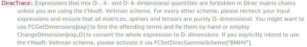

DiracSimplify[exp] simplifies products of Dirac matrices in exp and expands noncommutative products. The simplifications are done by applying Contract, DiracEquation, DiracTrick, SpinorChainTrick and SirlinSimplify. All \gamma^5, \gamma^6 and \gamma^7 are moved to the right. The order of the other Dirac matrices is not changed, unless the option DiracOrder is set to True.
Overview, Contract, DiracEquation, DiracSigmaExplicit, DiracSubstitute5, DiracSubstitute67, DiracGamma, DiracGammaExpand, DiracOrder, DiracTrace, DiracTraceEvaluate, DiracTrick, FCDiracIsolate, SirlinSimplify, SpinorChainTrick, SpinorChainEvaluate, ToDiracGamma67.
Simplify a 4-dimensional Dirac matrix chain with a dummy Lorentz index
GA[\[Mu], \[Nu], \[Mu]]
DiracSimplify[%]\bar{\gamma }^{\mu }.\bar{\gamma }^{\nu }.\bar{\gamma }^{\mu }
-2 \bar{\gamma }^{\nu }
Another common simplification concerns Dirac matrices contracted to the same 4-vector
GS[p] . GS[p]
DiracSimplify[%]\left(\bar{\gamma }\cdot \overline{p}\right).\left(\bar{\gamma }\cdot \overline{p}\right)
\overline{p}^2
Unlike DiracTrick, DiracSimplify also carries out noncommutative expansions
GS[a + b] . GS[p] . GS[c + d] . GS[p]
DiracSimplify[%]\left(\bar{\gamma }\cdot \left(\overline{a}+\overline{b}\right)\right).\left(\bar{\gamma }\cdot \overline{p}\right).\left(\bar{\gamma }\cdot \left(\overline{c}+\overline{d}\right)\right).\left(\bar{\gamma }\cdot \overline{p}\right)
2 \left(\overline{c}\cdot \overline{p}\right) \left(\bar{\gamma }\cdot \overline{a}\right).\left(\bar{\gamma }\cdot \overline{p}\right)-\overline{p}^2 \left(\bar{\gamma }\cdot \overline{a}\right).\left(\bar{\gamma }\cdot \overline{c}\right)+2 \left(\overline{d}\cdot \overline{p}\right) \left(\bar{\gamma }\cdot \overline{a}\right).\left(\bar{\gamma }\cdot \overline{p}\right)-\overline{p}^2 \left(\bar{\gamma }\cdot \overline{a}\right).\left(\bar{\gamma }\cdot \overline{d}\right)+2 \left(\overline{c}\cdot \overline{p}\right) \left(\bar{\gamma }\cdot \overline{b}\right).\left(\bar{\gamma }\cdot \overline{p}\right)-\overline{p}^2 \left(\bar{\gamma }\cdot \overline{b}\right).\left(\bar{\gamma }\cdot \overline{c}\right)+2 \left(\overline{d}\cdot \overline{p}\right) \left(\bar{\gamma }\cdot \overline{b}\right).\left(\bar{\gamma }\cdot \overline{p}\right)-\overline{p}^2 \left(\bar{\gamma }\cdot \overline{b}\right).\left(\bar{\gamma }\cdot \overline{d}\right)
DiracTrick[GS[a + b] . GS[p] . GS[c + d] . GS[p]]2 \left(\bar{\gamma }\cdot \left(\overline{a}+\overline{b}\right)\right).\left(\bar{\gamma }\cdot \overline{p}\right) \left((\overline{c}+\overline{d})\cdot \overline{p}\right)-\overline{p}^2 \left(\bar{\gamma }\cdot \left(\overline{a}+\overline{b}\right)\right).\left(\bar{\gamma }\cdot \left(\overline{c}+\overline{d}\right)\right)
Some of those expansions can be inhibited via the option Expanding.
DiracSimplify[GS[a + b] . GS[p] . GS[c + d] . GS[p], Expanding -> False]-\overline{p}^2 \left(\bar{\gamma }\cdot \overline{a}+\bar{\gamma }\cdot \overline{b}\right).\left(\bar{\gamma }\cdot \overline{c}+\bar{\gamma }\cdot \overline{d}\right)+2 \left(\overline{c}\cdot \overline{p}\right) \left(\bar{\gamma }\cdot \overline{a}+\bar{\gamma }\cdot \overline{b}\right).\left(\bar{\gamma }\cdot \overline{p}\right)+2 \left(\overline{d}\cdot \overline{p}\right) \left(\bar{\gamma }\cdot \overline{a}+\bar{\gamma }\cdot \overline{b}\right).\left(\bar{\gamma }\cdot \overline{p}\right)
The matrix chain may also live in D dimensions
GAD[\[Mu], \[Nu], \[Mu]]
DiracSimplify[%]\gamma ^{\mu }.\gamma ^{\nu }.\gamma ^{\mu }
2 \gamma ^{\nu }-D \gamma ^{\nu }
GSD[p] . GAD[\[Alpha], \[Beta]] . GSD[p]
DiracSimplify[%](\gamma \cdot p).\gamma ^{\alpha }.\gamma ^{\beta }.(\gamma \cdot p)
p^2 \gamma ^{\alpha }.\gamma ^{\beta }+2 p^{\alpha } \gamma ^{\beta }.(\gamma \cdot p)-2 p^{\beta } \gamma ^{\alpha }.(\gamma \cdot p)
GAD @@ Join[{\[Mu]}, Table[Subscript[\[Nu], i], {i, 6}], {\[Mu]}]
DiracSimplify[%]\gamma ^{\mu }.\gamma ^{\nu _1}.\gamma ^{\nu _2}.\gamma ^{\nu _3}.\gamma ^{\nu _4}.\gamma ^{\nu _5}.\gamma ^{\nu _6}.\gamma ^{\mu }
-12 \gamma ^{\nu _1}.\gamma ^{\nu _2}.\gamma ^{\nu _3}.\gamma ^{\nu _4}.\gamma ^{\nu _5}.\gamma ^{\nu _6}+D \gamma ^{\nu _1}.\gamma ^{\nu _2}.\gamma ^{\nu _3}.\gamma ^{\nu _4}.\gamma ^{\nu _5}.\gamma ^{\nu _6}+4 \gamma ^{\nu _3}.\gamma ^{\nu _4}.\gamma ^{\nu _5}.\gamma ^{\nu _6} g^{\nu _1\nu _2}-4 \gamma ^{\nu _2}.\gamma ^{\nu _4}.\gamma ^{\nu _5}.\gamma ^{\nu _6} g^{\nu _1\nu _3}+4 \gamma ^{\nu _2}.\gamma ^{\nu _3}.\gamma ^{\nu _5}.\gamma ^{\nu _6} g^{\nu _1\nu _4}-4 \gamma ^{\nu _2}.\gamma ^{\nu _3}.\gamma ^{\nu _4}.\gamma ^{\nu _6} g^{\nu _1\nu _5}+4 \gamma ^{\nu _2}.\gamma ^{\nu _3}.\gamma ^{\nu _4}.\gamma ^{\nu _5} g^{\nu _1\nu _6}+4 \gamma ^{\nu _1}.\gamma ^{\nu _4}.\gamma ^{\nu _5}.\gamma ^{\nu _6} g^{\nu _2\nu _3}-4 \gamma ^{\nu _1}.\gamma ^{\nu _3}.\gamma ^{\nu _5}.\gamma ^{\nu _6} g^{\nu _2\nu _4}+4 \gamma ^{\nu _1}.\gamma ^{\nu _3}.\gamma ^{\nu _4}.\gamma ^{\nu _6} g^{\nu _2\nu _5}-4 \gamma ^{\nu _1}.\gamma ^{\nu _3}.\gamma ^{\nu _4}.\gamma ^{\nu _5} g^{\nu _2\nu _6}+4 \gamma ^{\nu _1}.\gamma ^{\nu _2}.\gamma ^{\nu _5}.\gamma ^{\nu _6} g^{\nu _3\nu _4}-4 \gamma ^{\nu _1}.\gamma ^{\nu _2}.\gamma ^{\nu _4}.\gamma ^{\nu _6} g^{\nu _3\nu _5}+4 \gamma ^{\nu _1}.\gamma ^{\nu _2}.\gamma ^{\nu _4}.\gamma ^{\nu _5} g^{\nu _3\nu _6}+4 \gamma ^{\nu _1}.\gamma ^{\nu _2}.\gamma ^{\nu _3}.\gamma ^{\nu _6} g^{\nu _4\nu _5}-4 \gamma ^{\nu _1}.\gamma ^{\nu _2}.\gamma ^{\nu _3}.\gamma ^{\nu _5} g^{\nu _4\nu _6}+4 \gamma ^{\nu _1}.\gamma ^{\nu _2}.\gamma ^{\nu _3}.\gamma ^{\nu _4} g^{\nu _5\nu _6}
-1/2 GA[5] . (GAD[\[Mu]] . GSD[v] - FVD[v, \[Mu]]) FVD[v, \[Mu]]
DiracSimplify[%]-\frac{1}{2} v^{\mu } \bar{\gamma }^5.\left(\gamma ^{\mu }.(\gamma \cdot v)-v^{\mu }\right)
0
\gamma^5 and the chirality projectors are always moved to the right
GA[5, \[Mu], \[Nu]]
DiracSimplify[%]\bar{\gamma }^5.\bar{\gamma }^{\mu }.\bar{\gamma }^{\nu }
\bar{\gamma }^{\mu }.\bar{\gamma }^{\nu }.\bar{\gamma }^5
GA[6] . GS[p + q]
DiracSimplify[%]\bar{\gamma }^6.\left(\bar{\gamma }\cdot \left(\overline{p}+\overline{q}\right)\right)
\left(\bar{\gamma }\cdot \overline{p}\right).\bar{\gamma }^7+\left(\bar{\gamma }\cdot \overline{q}\right).\bar{\gamma }^7
The properties of the chirality projectors are taken into account without substituting explicit expressions for \gamma^6 and \gamma^7.
GA[\[Mu]] . (c1 GA[6] + c2 GA[7]) . (GA[p] + m) . (c3 GA[6] + c4 GA[7]) . GA[\[Mu]]
DiracSimplify[%]\bar{\gamma }^{\mu }.\left(\text{c1} \bar{\gamma }^6+\text{c2} \bar{\gamma }^7\right).\left(\bar{\gamma }^p+m\right).\left(\text{c3} \bar{\gamma }^6+\text{c4} \bar{\gamma }^7\right).\bar{\gamma }^{\mu }
4 \;\text{c1} \;\text{c3} m \bar{\gamma }^7-2 \;\text{c1} \;\text{c4} \bar{\gamma }^p.\bar{\gamma }^6-2 \;\text{c2} \;\text{c3} \bar{\gamma }^p.\bar{\gamma }^7+4 \;\text{c2} \;\text{c4} m \bar{\gamma }^6
Moreover, \frac{1}{2} \left( 1 \pm \gamma^5 \right) is automatically replaced by \gamma^{6/7}.
(1/2 - GA[5]/2) . (-((a + GS[p + q])/b)) . (1/2 + GA[5]/2)
DiracSimplify[%]\left(\frac{1}{2}-\frac{\bar{\gamma }^5}{2}\right).\left(-\frac{\bar{\gamma }\cdot \left(\overline{p}+\overline{q}\right)+a}{b}\right).\left(\frac{\bar{\gamma }^5}{2}+\frac{1}{2}\right)
-\frac{\left(\bar{\gamma }\cdot \overline{p}\right).\bar{\gamma }^6}{b}-\frac{\left(\bar{\gamma }\cdot \overline{q}\right).\bar{\gamma }^6}{b}
Suitable combinations of \gamma^5 will not be rewritten in terms of chirality projectors, if the option ToDiracGamma67 is set to False.
DiracSimplify[(1/2 - GA[5]/2) . (-((a + GS[p + q])/b)) . (1/2 + GA[5]/2),
ToDiracGamma67 -> False]-\frac{\bar{\gamma }\cdot \overline{p}}{2 b}-\frac{\left(\bar{\gamma }\cdot \overline{p}\right).\bar{\gamma }^5}{2 b}-\frac{\bar{\gamma }\cdot \overline{q}}{2 b}-\frac{\left(\bar{\gamma }\cdot \overline{q}\right).\bar{\gamma }^5}{2 b}
However, it the final result must contain only \gamma^5 but not \gamma^6 or \gamma^7, it is better to invoke the option DiracSubstitute67. This way DiracSimplify can perform more intermediate simplifications before presenting the final result.
DiracSimplify[(1/2 - GA[5]/2) . (-((a + GS[p + q])/b)) . (1/2 + GA[5]/2),
DiracSubstitute67 -> True]-\frac{\bar{\gamma }\cdot \overline{p}}{2 b}-\frac{\left(\bar{\gamma }\cdot \overline{p}\right).\bar{\gamma }^5}{2 b}-\frac{\bar{\gamma }\cdot \overline{q}}{2 b}-\frac{\left(\bar{\gamma }\cdot \overline{q}\right).\bar{\gamma }^5}{2 b}
It is also possible to eliminate \gamma^5 by rewriting it in terms of the chirality projectors
DiracSimplify[GA[5, \[Mu], \[Nu]], DiracSubstitute5 -> True]\bar{\gamma }^{\mu }.\bar{\gamma }^{\nu }.\bar{\gamma }^6-\bar{\gamma }^{\mu }.\bar{\gamma }^{\nu }.\bar{\gamma }^7
The Dirac equation is routinely used to simplify closed spinor chains.
(SpinorVBar[Subscript[p, 2], Subscript[m, 2]] . (GS[Subscript[p, 1]] +
Subscript[m, 1]) . SpinorU[Subscript[p, 1], Subscript[m, 1]])
DiracSimplify[%]\bar{v}\left(p_2,m_2\right).\left(\bar{\gamma }\cdot \overline{p}_1+m_1\right).u\left(p_1,m_1\right)
2 m_1 \left(\varphi (-\overline{p}_2,m_2)\right).\left(\varphi (\overline{p}_1,m_1)\right)
SpinorVBar[p] . GS[p] . SpinorU[q]
DiracSimplify[%]\bar{v}(p).\left(\bar{\gamma }\cdot \overline{p}\right).u(q)
0
Use the option DiracEquation to deactivate this type of simplifications.
DiracSimplify[SpinorVBar[p] . GS[p] . SpinorU[q], DiracEquation -> False]\left(\varphi (-\overline{p})\right).\left(\bar{\gamma }\cdot \overline{p}\right).\left(\varphi (\overline{q})\right)
Suitable products of 4-dimensional spinor chains are simplified using Sirlin’s identities
(SpinorUBar[Subscript[p, 3], Subscript[m, 3]] . GA[\[Mu], \[Rho], \[Nu], 6] . SpinorU[Subscript[p, 1],
Subscript[m, 1]] SpinorUBar[Subscript[p, 4],
Subscript[m, 4]] . GA[\[Mu], \[Tau], \[Nu], 6] . SpinorU[Subscript[p, 2], Subscript[m, 2]])
DiracSimplify[%]\bar{u}\left(p_3,m_3\right).\bar{\gamma }^{\mu }.\bar{\gamma }^{\rho }.\bar{\gamma }^{\nu }.\bar{\gamma }^6.u\left(p_1,m_1\right) \bar{u}\left(p_4,m_4\right).\bar{\gamma }^{\mu }.\bar{\gamma }^{\tau }.\bar{\gamma }^{\nu }.\bar{\gamma }^6.u\left(p_2,m_2\right)
\left(\varphi (\overline{p}_3,m_3)\right).\bar{\gamma }^{\mu }.\bar{\gamma }^{\rho }.\bar{\gamma }^{\nu }.\bar{\gamma }^6.\left(\varphi (\overline{p}_1,m_1)\right) \left(\varphi (\overline{p}_4,m_4)\right).\bar{\gamma }^{\mu }.\bar{\gamma }^{\tau }.\bar{\gamma }^{\nu }.\bar{\gamma }^6.\left(\varphi (\overline{p}_2,m_2)\right)
The applications of Sirlin’s identities can be disabled by setting the option SirlinSimplify to False.
DiracSimplify[SpinorUBar[Subscript[p, 3], Subscript[m, 3]] . GA[\[Mu], \[Rho], \[Nu],
6] . SpinorU[Subscript[p, 1], Subscript[m, 1]]*
SpinorUBar[Subscript[p, 4], Subscript[m, 4]] . GA[\[Mu], \[Tau], \[Nu],
6] . SpinorU[Subscript[p, 2], Subscript[m, 2]], SirlinSimplify -> False]\left(\varphi (\overline{p}_3,m_3)\right).\bar{\gamma }^{\mu }.\bar{\gamma }^{\rho }.\bar{\gamma }^{\nu }.\bar{\gamma }^6.\left(\varphi (\overline{p}_1,m_1)\right) \left(\varphi (\overline{p}_4,m_4)\right).\bar{\gamma }^{\mu }.\bar{\gamma }^{\tau }.\bar{\gamma }^{\nu }.\bar{\gamma }^6.\left(\varphi (\overline{p}_2,m_2)\right)
Even when the usage of Sirlin’s identities is disabled, DiracSimplify will still try to perform some simplifications on the spinor chains, e.g. by canonicalizing the dummy indices.
(c1 SpinorUBar[Subscript[p, 3], Subscript[m, 3]] . GA[\[Mu], \[Rho], \[Nu], 6] . SpinorU[Subscript[p,
1], Subscript[m, 1]] SpinorUBar[Subscript[p, 4], Subscript[m,
4]] . GA[\[Mu], \[Tau], \[Nu], 6] . SpinorU[Subscript[p, 2], Subscript[m, 2]] +
c2 SpinorUBar[Subscript[p, 3], Subscript[m, 3]] . GA[\[Alpha], \[Rho],
\[Nu], 6] . SpinorU[Subscript[p, 1], Subscript[m, 1]] SpinorUBar[Subscript[p,
4], Subscript[m, 4]] . GA[\[Alpha], \[Tau], \[Nu], 6] . SpinorU[Subscript[p, 2], Subscript[m, 2]])
DiracSimplify[%, SirlinSimplify -> False] // Factor\text{c1} \bar{u}\left(p_3,m_3\right).\bar{\gamma }^{\mu }.\bar{\gamma }^{\rho }.\bar{\gamma }^{\nu }.\bar{\gamma }^6.u\left(p_1,m_1\right) \bar{u}\left(p_4,m_4\right).\bar{\gamma }^{\mu }.\bar{\gamma }^{\tau }.\bar{\gamma }^{\nu }.\bar{\gamma }^6.u\left(p_2,m_2\right)+\text{c2} \bar{u}\left(p_3,m_3\right).\bar{\gamma }^{\alpha }.\bar{\gamma }^{\rho }.\bar{\gamma }^{\nu }.\bar{\gamma }^6.u\left(p_1,m_1\right) \bar{u}\left(p_4,m_4\right).\bar{\gamma }^{\alpha }.\bar{\gamma }^{\tau }.\bar{\gamma }^{\nu }.\bar{\gamma }^6.u\left(p_2,m_2\right)
\text{c1} \left(\varphi (\overline{p}_3,m_3)\right).\bar{\gamma }^{\mu }.\bar{\gamma }^{\rho }.\bar{\gamma }^{\nu }.\bar{\gamma }^6.\left(\varphi (\overline{p}_1,m_1)\right) \left(\varphi (\overline{p}_4,m_4)\right).\bar{\gamma }^{\mu }.\bar{\gamma }^{\tau }.\bar{\gamma }^{\nu }.\bar{\gamma }^6.\left(\varphi (\overline{p}_2,m_2)\right)+\text{c2} \left(\varphi (\overline{p}_3,m_3)\right).\bar{\gamma }^{\alpha }.\bar{\gamma }^{\rho }.\bar{\gamma }^{\nu }.\bar{\gamma }^6.\left(\varphi (\overline{p}_1,m_1)\right) \left(\varphi (\overline{p}_4,m_4)\right).\bar{\gamma }^{\alpha }.\bar{\gamma }^{\tau }.\bar{\gamma }^{\nu }.\bar{\gamma }^6.\left(\varphi (\overline{p}_2,m_2)\right)
Setting SpinorChainTrick to `False disables this behavior.
DiracSimplify[c1 SpinorUBar[Subscript[p, 3], Subscript[m, 3]] . GA[\[Mu], \[Rho],
\[Nu], 6] . SpinorU[Subscript[p, 1], Subscript[m, 1]] SpinorUBar[Subscript[p,
4], Subscript[m, 4]] . GA[\[Mu], \[Tau], \[Nu], 6] . SpinorU[Subscript[p, 2],
Subscript[m, 2]] + c2 SpinorUBar[Subscript[p, 3], Subscript[m,
3]] . GA[\[Alpha], \[Rho], \[Nu], 6] . SpinorU[Subscript[p, 1], Subscript[m,
1]] SpinorUBar[Subscript[p, 4], Subscript[m, 4]] . GA[\[Alpha], \[Tau],
\[Nu], 6] . SpinorU[Subscript[p, 2], Subscript[m, 2]],
SirlinSimplify -> False, SpinorChainTrick -> False]\text{c1} \left(\varphi (\overline{p}_3,m_3)\right).\bar{\gamma }^{\mu }.\bar{\gamma }^{\rho }.\bar{\gamma }^{\nu }.\bar{\gamma }^6.\left(\varphi (\overline{p}_1,m_1)\right) \left(\varphi (\overline{p}_4,m_4)\right).\bar{\gamma }^{\mu }.\bar{\gamma }^{\tau }.\bar{\gamma }^{\nu }.\bar{\gamma }^6.\left(\varphi (\overline{p}_2,m_2)\right)+\text{c2} \left(\varphi (\overline{p}_3,m_3)\right).\bar{\gamma }^{\alpha }.\bar{\gamma }^{\rho }.\bar{\gamma }^{\nu }.\bar{\gamma }^6.\left(\varphi (\overline{p}_1,m_1)\right) \left(\varphi (\overline{p}_4,m_4)\right).\bar{\gamma }^{\alpha }.\bar{\gamma }^{\tau }.\bar{\gamma }^{\nu }.\bar{\gamma }^6.\left(\varphi (\overline{p}_2,m_2)\right)
DiracSimplify will not reorder Dirac matrices lexicographically, but can be forced to do so via the option DiracOrder.
DiracSimplify[GA[\[Nu], \[Mu]]]
DiracSimplify[GA[\[Nu], \[Mu]], DiracOrder -> True]\bar{\gamma }^{\nu }.\bar{\gamma }^{\mu }
2 \bar{g}^{\mu \nu }-\bar{\gamma }^{\mu }.\bar{\gamma }^{\nu }
Setting InsideDiracTrace to True$ makes the function assume that it is acting inside a Dirac trace. For instance, chains with an odd number of Dirac matrices will be set to zero.
GA[\[Mu], \[Nu], \[Rho]]
DiracSimplify[%, InsideDiracTrace -> True]\bar{\gamma }^{\mu }.\bar{\gamma }^{\nu }.\bar{\gamma }^{\rho }
0
Yet, it will not explicitly calculate the trace
GA[\[Mu], \[Nu], \[Rho], \[Sigma]]
DiracSimplify[%, InsideDiracTrace -> True]\bar{\gamma }^{\mu }.\bar{\gamma }^{\nu }.\bar{\gamma }^{\rho }.\bar{\gamma }^{\sigma }
\bar{\gamma }^{\mu }.\bar{\gamma }^{\nu }.\bar{\gamma }^{\rho }.\bar{\gamma }^{\sigma }
Since FeynCalc 9.3, DiracSimplify will automatically evaluate Dirac traces in the input expression
DiracTrace[GA[\[Mu], \[Nu], \[Rho], \[Sigma]]]
DiracSimplify[%]\text{tr}\left(\bar{\gamma }^{\mu }.\bar{\gamma }^{\nu }.\bar{\gamma }^{\rho }.\bar{\gamma }^{\sigma }\right)
4 \bar{g}^{\mu \sigma } \bar{g}^{\nu \rho }-4 \bar{g}^{\mu \rho } \bar{g}^{\nu \sigma }+4 \bar{g}^{\mu \nu } \bar{g}^{\rho \sigma }
DiracTrace[(-GSD[q] + SMP["m_e"]) . GAD[\[Nu]] . (GSD[p - q] + SMP["m_e"]) . GAD[\[Mu]]]
DiracSimplify[%]\text{tr}\left(\left(m_e-\gamma \cdot q\right).\gamma ^{\nu }.\left(m_e+\gamma \cdot (p-q)\right).\gamma ^{\mu }\right)
4 m_e^2 g^{\mu \nu }+4 g^{\mu \nu } (p\cdot q)-4 q^2 g^{\mu \nu }-4 p^{\nu } q^{\mu }-4 p^{\mu } q^{\nu }+8 q^{\mu } q^{\nu }
This will not happen if the option DiracTraceEvaluate is set to False. However, DiracSimplify will still perform some simplifications inside the trace, without evaluating it explicitly.
DiracSimplify[DiracTrace[(-GSD[q] + SMP["m_e"]) . GAD[\[Nu]] . (GSD[p - q] +
SMP["m_e"]) . GAD[\[Mu]]] , DiracTraceEvaluate -> False]\text{tr}\left(m_e^2 \gamma ^{\nu }.\gamma ^{\mu }+m_e \gamma ^{\nu }.(\gamma \cdot p).\gamma ^{\mu }-m_e \gamma ^{\nu }.(\gamma \cdot q).\gamma ^{\mu }-m_e (\gamma \cdot q).\gamma ^{\nu }.\gamma ^{\mu }-(\gamma \cdot q).\gamma ^{\nu }.(\gamma \cdot p).\gamma ^{\mu }-q^2 \gamma ^{\nu }.\gamma ^{\mu }+2 q^{\nu } (\gamma \cdot q).\gamma ^{\mu }\right)
Set DiracTrace to False if you want DiracSimplify not to touch the Dirac traces.
DiracSimplify[DiracTrace[(-GSD[q] + SMP["m_e"]) . GAD[\[Nu]] . (GSD[p - q] +
SMP["m_e"]) . GAD[\[Mu]]] , DiracTraceEvaluate -> False, DiracTrace -> False]\text{tr}\left(\left(m_e-\gamma \cdot q\right).\gamma ^{\nu }.\left(m_e+\gamma \cdot (p-q)\right).\gamma ^{\mu }\right)
When doing calculations at one loop and above, you may encounter expressions that contain D- and 4-dimensional objects.
Although DiracSimplify can handle such terms effortlessly, it will not do so unless you certify that you fully understand what you are doing: being sloppy with the dimensions easily leads to inconsistencies and wrong results!
GAD[\[Mu]] . (GA[p] + m) . GAD[\[Mu]]
DiracSimplify[%]\gamma ^{\mu }.\left(\bar{\gamma }^p+m\right).\gamma ^{\mu }

\text{\$Aborted}
By default, FeynCalc uses the naive dimensional regularization (NDR) scheme, where all Dirac matrices are taken to be D-dimensional. Therefore, in NDR you may not have mixtures of Dirac matrices living in D and 4 dimensions. However, such expressions are possible in the t’Hooft-Veltman-Breitenlohner-Maison (BMHV) scheme.
FCSetDiracGammaScheme["BMHV"];
DiracSimplify[GAD[\[Mu]] . (GA[p] + m) . GAD[\[Mu]]]-D \bar{\gamma }^p+2 \bar{\gamma }^p+D m
FCSetDiracGammaScheme["NDR"];The BMHV scheme is a special prescription for handling \gamma^5 in dimensional regularization. Do not activate this scheme mindlessly just to get rid of errors from DiracSimplify! If you are doing a calculation in NDR or a calculation that does not involve \gamma^5, better make sure that your input expressions are correctly written to be D-dimensional objects.
Traces that contain an odd number of \gamma^5 or chirality projectors cannot be calculated unambiguously in NDR. To avoid inconsistencies, DiracTrace will refuse to evaluate such traces in NDR.
DiracTrace[GAD[\[Mu], \[Nu], \[Rho], \[Sigma], \[Alpha], \[Beta]] . GA[5]]
DiracSimplify[%]\text{tr}\left(\gamma ^{\mu }.\gamma ^{\nu }.\gamma ^{\rho }.\gamma ^{\sigma }.\gamma ^{\alpha }.\gamma ^{\beta }.\bar{\gamma }^5\right)
\text{tr}\left(\gamma ^{\mu }.\gamma ^{\nu }.\gamma ^{\rho }.\gamma ^{\sigma }.\gamma ^{\alpha }.\gamma ^{\beta }.\bar{\gamma }^5\right)
Such traces can be consistently calculated in the BMHV scheme. Our scheme choice as of course also possible, but those are not implemented in FeynCalc.
FCSetDiracGammaScheme["BMHV"];
DiracSimplify[DiracTrace[GAD[\[Mu], \[Nu], \[Rho], \[Sigma], \[Alpha], \[Beta]] . GA[5]]]-4 i g^{\alpha \beta } \bar{\epsilon }^{\mu \nu \rho \sigma }-4 i g^{\alpha \mu } \bar{\epsilon }^{\beta \nu \rho \sigma }+4 i g^{\alpha \nu } \bar{\epsilon }^{\beta \mu \rho \sigma }-4 i g^{\alpha \rho } \bar{\epsilon }^{\beta \mu \nu \sigma }+4 i g^{\alpha \sigma } \bar{\epsilon }^{\beta \mu \nu \rho }+4 i g^{\beta \mu } \bar{\epsilon }^{\alpha \nu \rho \sigma }-4 i g^{\beta \nu } \bar{\epsilon }^{\alpha \mu \rho \sigma }+4 i g^{\beta \rho } \bar{\epsilon }^{\alpha \mu \nu \sigma }-4 i g^{\beta \sigma } \bar{\epsilon }^{\alpha \mu \nu \rho }-4 i g^{\mu \nu } \bar{\epsilon }^{\alpha \beta \rho \sigma }+4 i g^{\mu \rho } \bar{\epsilon }^{\alpha \beta \nu \sigma }-4 i g^{\mu \sigma } \bar{\epsilon }^{\alpha \beta \nu \rho }-4 i g^{\nu \rho } \bar{\epsilon }^{\alpha \beta \mu \sigma }+4 i g^{\nu \sigma } \bar{\epsilon }^{\alpha \beta \mu \rho }-4 i g^{\rho \sigma } \bar{\epsilon }^{\alpha \beta \mu \nu }
FCSetDiracGammaScheme["NDR"];Keep in mind that the BMHV scheme violates axial Ward identities and requires special model-dependent counter-terms to restore those. Therefore, just setting FCSetDiracGammaScheme["BMHV"] does not magically resolve all your troubles with \gamma^5 in D-dimensions. The proper treatment of \gamma^5 in dimensional regularization is an intricate issue that cannot be boiled down to a simple and universal recipe. FeynCalc merely carries out the algebraic operations that you request, but it is still your task to ensure that what you do makes sense.
Since FeynCalc 9.3 it is also possible to simplify Dirac matrices with Cartesian or temporal indices. However, the support of nonrelativistic calculations is a very new feature, so that things may not work as smooth as they do for manifestly Lorentz covariant expressions.
CGA[i] . CGA[i]
DiracSimplify[%]\overline{\gamma }^i.\overline{\gamma }^i
-3
CGA[i] . CGS[p] . CGA[j] . CGS[p + q]
DiracSimplify[%]\overline{\gamma }^i.\left(\overline{\gamma }\cdot \overline{p}\right).\overline{\gamma }^j.\left(\overline{\gamma }\cdot \left(\overline{p}+\overline{q}\right)\right)
\overline{p}^2 \overline{\gamma }^i.\overline{\gamma }^j-2 \overline{p}^j \overline{\gamma }^i.\left(\overline{\gamma }\cdot \overline{p}\right)+\overline{\gamma }^i.\left(\overline{\gamma }\cdot \overline{p}\right).\overline{\gamma }^j.\left(\overline{\gamma }\cdot \overline{q}\right)
CGA[i] . CGS[p] . CGA[j] . CGS[p + q] KD[i, j]
DiracSimplify[%]\bar{\delta }^{ij} \overline{\gamma }^i.\left(\overline{\gamma }\cdot \overline{p}\right).\overline{\gamma }^j.\left(\overline{\gamma }\cdot \left(\overline{p}+\overline{q}\right)\right)
\left(\overline{\gamma }\cdot \overline{p}\right).\left(\overline{\gamma }\cdot \overline{q}\right)-\overline{p}^2
TGA[] . CGA[i] . TGA[]
DiracSimplify[%]\bar{\gamma }^0.\overline{\gamma }^i.\bar{\gamma }^0
-\overline{\gamma }^i
DiracTrace[CGAD[i, j, k, l]]
DiracSimplify[%]\text{tr}\left(\gamma ^i.\gamma ^j.\gamma ^k.\gamma ^l\right)
4 \delta ^{il} \delta ^{jk}-4 \delta ^{ik} \delta ^{jl}+4 \delta ^{ij} \delta ^{kl}
For performance reasons DiracSimplify will not canonically order Dirac matrices and canonicalize Lorentz/Cartesian indices by default. However, amplitudes involving 4-fermion operators may require such additional simplifications. In this case they should explicitly activated by the user. Of course, this will somewhat slow down the evaluation.
ex = (Spinor[-Momentum[p1, D], mb, 1] . GAD[\[Mu]] . GA[7] . GAD[\[Nu]] . GAD[\[Alpha]] .
GAD[\[Beta]] . GAD[\[Delta]] . GA[7] . Spinor[-Momentum[p4, D], 0, 1] Spinor[Momentum[p3, D], 0,
1] . GAD[\[Alpha]] . GAD[\[Beta]] . GAD[\[Delta]] . GA[7] . GAD[\[Nu]] . GAD[\[Mu]] .
GA[7] . Spinor[Momentum[p2, D], 0, 1])
DiracSimplify[ex](\varphi (\text{p3})).\gamma ^{\alpha }.\gamma ^{\beta }.\gamma ^{\delta }.\bar{\gamma }^7.\gamma ^{\nu }.\gamma ^{\mu }.\bar{\gamma }^7.(\varphi (\text{p2})) (\varphi (-\text{p1},\text{mb})).\gamma ^{\mu }.\bar{\gamma }^7.\gamma ^{\nu }.\gamma ^{\alpha }.\gamma ^{\beta }.\gamma ^{\delta }.\bar{\gamma }^7.(\varphi (-\text{p4}))
(\varphi (\text{p3})).\gamma ^{\alpha }.\gamma ^{\beta }.\gamma ^{\delta }.\gamma ^{\nu }.\gamma ^{\mu }.\bar{\gamma }^7.(\varphi (\text{p2})) (\varphi (-\text{p1},\text{mb})).\gamma ^{\mu }.\gamma ^{\nu }.\gamma ^{\alpha }.\gamma ^{\beta }.\gamma ^{\delta }.\bar{\gamma }^7.(\varphi (-\text{p4}))
DiracSimplify[ex, DiracOrder -> True, LorentzIndexNames -> {i1, i2, i3, i4, i5}]-24 D^2 (\varphi (\text{p3})).\gamma ^{\text{i1}}.\bar{\gamma }^7.(\varphi (\text{p2})) (\varphi (-\text{p1},\text{mb})).\gamma ^{\text{i1}}.\bar{\gamma }^7.(\varphi (-\text{p4}))+14 D (\varphi (\text{p3})).\gamma ^{\text{i1}}.\gamma ^{\text{i2}}.\gamma ^{\text{i3}}.\bar{\gamma }^7.(\varphi (\text{p2})) (\varphi (-\text{p1},\text{mb})).\gamma ^{\text{i1}}.\gamma ^{\text{i2}}.\gamma ^{\text{i3}}.\bar{\gamma }^7.(\varphi (-\text{p4}))+112 D (\varphi (\text{p3})).\gamma ^{\text{i1}}.\bar{\gamma }^7.(\varphi (\text{p2})) (\varphi (-\text{p1},\text{mb})).\gamma ^{\text{i1}}.\bar{\gamma }^7.(\varphi (-\text{p4}))-(\varphi (\text{p3})).\gamma ^{\text{i1}}.\gamma ^{\text{i2}}.\gamma ^{\text{i3}}.\gamma ^{\text{i4}}.\gamma ^{\text{i5}}.\bar{\gamma }^7.(\varphi (\text{p2})) (\varphi (-\text{p1},\text{mb})).\gamma ^{\text{i1}}.\gamma ^{\text{i2}}.\gamma ^{\text{i3}}.\gamma ^{\text{i4}}.\gamma ^{\text{i5}}.\bar{\gamma }^7.(\varphi (-\text{p4}))-36 (\varphi (\text{p3})).\gamma ^{\text{i1}}.\gamma ^{\text{i2}}.\gamma ^{\text{i3}}.\bar{\gamma }^7.(\varphi (\text{p2})) (\varphi (-\text{p1},\text{mb})).\gamma ^{\text{i1}}.\gamma ^{\text{i2}}.\gamma ^{\text{i3}}.\bar{\gamma }^7.(\varphi (-\text{p4}))-64 (\varphi (\text{p3})).\gamma ^{\text{i1}}.\bar{\gamma }^7.(\varphi (\text{p2})) (\varphi (-\text{p1},\text{mb})).\gamma ^{\text{i1}}.\bar{\gamma }^7.(\varphi (-\text{p4}))
DiracSimplify automatically evaluates suitable spinor products with equal momenta, e.g.
ex = SpinorUBar[p, m] . SpinorU[p, m]
DiracSimplify[ex]\bar{u}(p,m).u(p,m)
2 m
This behavior can be turned off by setting the option SpinorChainEvaluate to False
DiracSimplify[ex, SpinorChainEvaluate -> False]\left(\varphi (\overline{p},m)\right).\left(\varphi (\overline{p},m)\right)